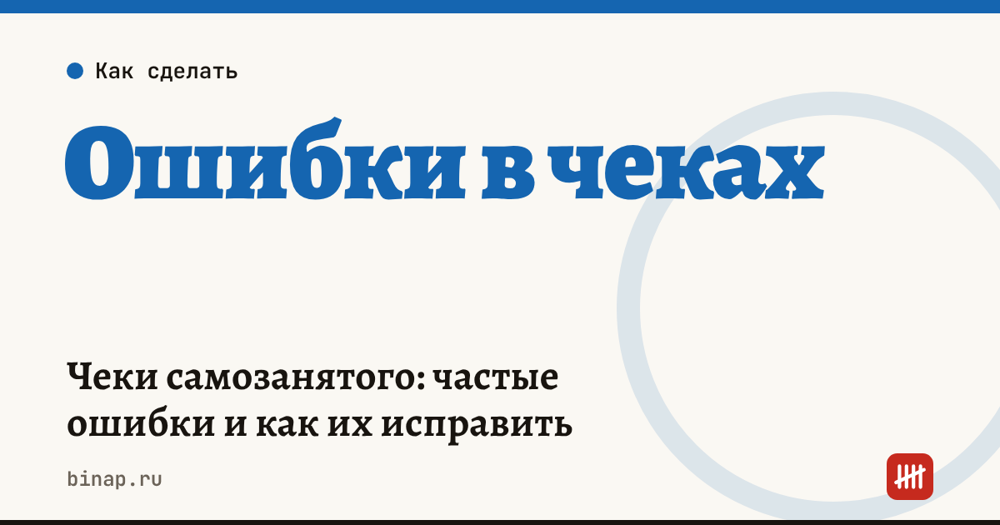

Чеки самозанятого: частые ошибки и как их исправить

Мастер на НПД платит налог только с тех денег, на которые пробил чек в «Мой налог». Поэтому ошибки в чеках — это не формальность: пропущенный чек означает штраф, а лишний или ошибочный — переплату налога. Разбираем частые ошибки и как исправить каждую.
Коротко
- Чек формируют в момент оплаты. При безналичных расчётах — не позднее 9-го числа следующего месяца.
- Чек отдают клиенту: на экране, по ссылке, в мессенджере или на бумаге.
- Если клиент — ИП или компания, в чеке указывают его ИНН и название.
- Ошибочный чек аннулируют в «Мой налог» с причиной «Чек сформирован ошибочно» или «Возврат средств» и при необходимости пробивают новый.
- За непробитый чек — штраф 20% от суммы расчёта, при повторе в течение 6 месяцев — 100% (ст. 129.13 НК).
Сроки, изменения и разборы для ИП и самозанятых — каждое утро в Telegram и MAX. Подпишитесь, чтобы не пропустить.
Частые ошибки и как исправить
| Ошибка | Чем грозит | Как исправить |
|---|---|---|
| Не пробили чек за наличные или перевод | штраф 20% суммы, повторно — 100% | пробить чек с датой фактической оплаты как можно скорее |
| Неверная сумма | лишний налог или недоплата | аннулировать с причиной «Чек сформирован ошибочно», пробить новый |
| Клиент — ИП или ООО, а чек выписан на физлицо | ставка 4% вместо 6%, у клиента нет документа для расходов | аннулировать, пробить новый с ИНН и названием клиента |
| Предоплата и окончательный расчёт одним чеком | неверный месяц дохода | чек на каждую оплату в день её получения |
| Возврат денег клиенту без аннулирования | налог с денег, которых нет | аннулировать чек с причиной «Возврат средств» |
| Чек на перевод от родственника или свои деньги | лишний налог | аннулировать: это не доход от деятельности |
Аннулирование видит налоговая. Если аннулировать много чеков без понятной причины, это может стать поводом для вопросов — подробно в статье Скоринг ФНС: аннулированные чеки самозанятых.
Пример: мастер маникюра за месяц
Расчёт редакции. Мастер принял 60 оплат по 2 000 ₽ — 120 000 ₽, все от физлиц. Пять оплат переводами забыл пробить: 10 000 ₽.
| Сумма | |
|---|---|
| Налог 4% с пробитых чеков: 110 000 × 4% | 4 400 ₽ |
| Штраф за 5 непробитых чеков: 10 000 × 20% | 2 000 ₽ |
| Налог, который всё равно придётся заплатить: 10 000 × 4% | 400 ₽ |
Забытые 5 чеков обошлись в 2 400 ₽ — в 6 раз больше налога с этих денег (расчёт редакции). При повторном нарушении в течение 6 месяцев штраф будет 100% суммы.
Как не ошибаться
- Пробивайте чек сразу после оплаты — в приложении «Мой налог» это меньше минуты.
- Раз в неделю сверяйте поступления на карту с чеками в приложении.
- Спрашивайте при записи, платит ли клиент от себя или от компании: для компании нужен ИНН.
- Подключите онлайн-запись с оплатой, если сервис умеет формировать чеки самозанятого автоматически. Что сравнить при выборе — в статье Онлайн-запись для мастера.
- Следите за лимитом 2,4 млн ₽ в год. Сколько оставляет себе мастер на НПД и на патенте — в калькуляторе дохода мастера и статье Самозанятый или патент для мастера. Все материалы — в разделе Мастерам.
Частые вопросы
Можно ли пробить чек задним числом? Да, в «Мой налог» указывают дату фактического расчёта. Но если срок уже нарушен, налоговая может оштрафовать.
Клиент заплатил переводом, а услугу я не оказала и вернула деньги. Что с чеком? Если чек был пробит — аннулируйте его с причиной «Возврат средств».
Нужно ли пробивать чек на чаевые? Чаевые за услугу — тоже доход от деятельности, на них пробивают чек.